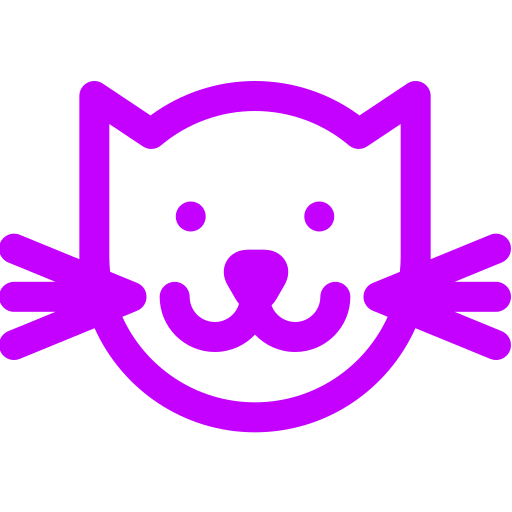

<ion-menu side="left" [content]="mainContent">
  <ion-header>
    <ion-toolbar class="user-profile">

      <ion-grid>
        <ion-row>
          <ion-col col-4>
            <div class="user-avatar">
              
            </div>
          </ion-col>
          <ion-col padding-top col-8>
            <h2 ion-text class="no-margin bold text-white">
              Alex Rivera
            </h2>
            <span ion-text color="light">Administrador</span>
          </ion-col>
        </ion-row>

        <ion-row no-padding class="other-data">
          <ion-col no-padding class="column">
            <button ion-button icon-left small full color="light" menuClose disabled>
              <ion-icon name="contact"></ion-icon>
              Edit Profile
            </button>
          </ion-col>
          <ion-col no-padding class="column">
            <button ion-button icon-left small full color="light" menuClose (click)="logout()">
              <ion-icon ios="ios-log-out" md="md-log-out"></ion-icon>
              Cerrar Sesión
            </button>
          </ion-col>
        </ion-row>
      </ion-grid>
    </ion-toolbar>
  </ion-header>
  <ion-content color="acsim">
    <ion-list class="user-list">
      <button ion-item menuClose class="text-lx" *ngFor="let menuItem of appMenuItems" (click)="goToPage(menuItem)">
        <ion-icon item-left [name]="menuItem.icon" color="primary"></ion-icon>
        <span ion-text color="primary">{{menuItem.title}}</span>
      </button>
    </ion-list>
  </ion-content>
</ion-menu>

<ion-nav #mainContent [root]="rootPage" swipeBackEnabled="false"></ion-nav>